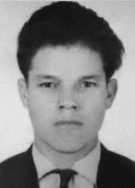

Milton
Soares
de Castro
CIRCUNSTÂNCIAS DA MORTE
Milton Soares de Castro morreu no dia 28 de abril de 1967. Ele completaria 27 anos de idade, quando teria sido morto por agentes do Estado. De acordo com a versão oficial, Milton Soares, teria cometido suicídio, por enforcamento, enquanto estava preso na Penitenciária Estadual de Linhares, Juiz de Fora (MG). Passados mais de 40 anos, as investigações sobre esse caso não nos autorizam a apresentar conclusão irrefutável acerca dos eventos que teriam culminado na morte desse militante do MNR.
Pesquisas realizadas pela Comissão Nacional da Verdade revelaram a existência de inúmeros elementos de convicção que permitem apontar, entretanto, que a versão oficial divulgada à época não se sustenta. Milton Soares decidiu se vincular à luta armada no Movimento Nacional Revolucionário, com o intuito de organizar a frente guerrilheira da Serra do Caparaó, localizada na divisa entre os estados de Minas Gerais e Espírito Santo. Milton e outros doze guerrilheiros ocuparam a Serra no início de 1967. O objetivo era mapear o local, para organizar o treinamento dos guerrilheiros que seriam deslocados posteriormente.
No dia 1º de abril de 1967, todos eles foram presos por agentes da Polícia do Exército e, conduzidos para a Penitenciária Estadual de Linhares, em Juiz de Fora. Nessa instituição, de acordo com o depoimento de presos políticos que ali se encontravam, Milton teria tido uma acalorada discussão com o major Ralph Grunewald Filho. Após esse episódio, Milton teria sido recolhido para uma cela isolada. No dia seguinte, 28 de abril de 1967, Milton apareceu morto. De acordo com a versão oficial, Milton teria cometido suicídio, enquanto estava isolado. O laudo necroscópico, assinado por Nelson Fernandes de Oliveira e Marcus Antônio Nagem Assad, confirma a versão oficial da morte por enforcamento. Os médicos descrevem a existência de algumas equimoses nas pernas de Milton, sobretudo na região dos joelhos. A versão do suicídio foi prontamente contestada pelos companheiros de Milton.
Conforme consta no Dossiê ditadura: Mortos e Desaparecidos no Brasil (1964-1985), Gregório Mendonça, que também havia sido preso na Serra do Caparaó, afirmou que Milton havia sido submetido a longo interrogatório na noite que antecedeu sua provável morte sob torturas. Ainda de acordo com Gregório, Milton fora colocado dentro da cela, envolto em um lençol, não sabendo informar se Milton já estava morto quando foi colocado dentro da cela ou se morrera depois. No ano de 2002, 35 anos após o desaparecimento de Milton Soares, o jornal Tribuna de Minas publicou matéria contestando a versão oficial divulgada pelo Estado à época dos acontecimentos.
De acordo com a reportagem, assinada pela jornalista Daniela Arbex, o corpo de Milton teria sido, na verdade, sepultado no Cemitério Municipal de juiz de Fora, na sepultura de número 312, quadra L. Ainda de acordo com a matéria, Milton teria sido enterrado às 14 horas do dia 29 de abril de 1967, conforme indica o livro de óbito desse cemitério.
Apesar das informações apresentadas pela reportagem da Tribuna de Minas, os familiares optaram por não realizar a exumação dos restos mortais. Diante da morte e ausência de identificação plena de seus restos mortais, a Comissão Nacional da Verdade, ao conferir tratamento jurídico mais adequado ao caso, entende que Milton Soares de Castro permanece desaparecido.
Milton Soares de Castro died on April 28, 1967. He would have turned 27 years old, when he was killed by State agents. According to the official version, Milton Soares committed suicide by hanging while he was imprisoned at the Linhares State Penitentiary, Juiz de Fora (MG). After more than 40 years, investigations into this case do not authorize us to present an irrefutable conclusion about the events that culminated in the death of this MNR activist.
Research carried out by the National Truth Commission revealed the existence of numerous elements of conviction that allow us to point out, however, that the official version released at the time is not sustainable. Milton Soares decided to join the armed struggle in the National Revolutionary Movement, with the aim of organizing the Serra do Caparaó guerrilla front, located on the border between the states of Minas Gerais and Espírito Santo. Milton and twelve other guerrillas occupied the Serra at the beginning of 1967. The objective was to map the place, to organize the training of the guerrillas who would be displaced later.
On April 1, 1967, they were all arrested by Army Police agents and taken to the Linhares State Penitentiary, in Juiz de Fora. In this institution, according to the testimony of political prisoners who were there, Milton had a heated argument with Major Ralph Grunewald Filho. After this episode, Milton would have been taken to an isolated cell. The next day, April 28, 1967, Milton turned up dead. According to the official version, Milton committed suicide while in isolation. The necroscopic report, signed by Nelson Fernandes de Oliveira and Marcus Antônio Nagem Assad, confirms the official version of death by hanging. Doctors describe the existence of some bruises on Milton's legs, especially in the knee area. The suicide version was promptly contested by Milton's companions.
As stated in the Dossier dictatorship: Dead and Missing in Brazil (1964-1985), Gregório Mendonça, who had also been arrested in Serra do Caparaó, stated that Milton had been subjected to long interrogation the night before his probable death under torture. Still according to Gregório, Milton was placed inside the cell, wrapped in a sheet, and he was unable to say whether Milton was already dead when he was placed inside the cell or if he had died later. In 2002, 35 years after the disappearance of Milton Soares, the newspaper Tribuna de Minas published an article contesting the official version released by the State at the time of the events.
According to the report, signed by journalist Daniela Arbex, Milton's body was, in fact, buried in the Juiz de Fora Municipal Cemetery, in grave number 312, block L. Also according to the article, Milton was buried at 2 pm on April 29, 1967, as indicated in the death book at that cemetery.
Despite the information presented by the Tribuna de Minas report, the family members chose not to exhume the remains. Given his death and the lack of full identification of his remains, the National Truth Commission, upon granting more appropriate legal treatment to the case, understands that Milton Soares de Castro remains missing.
Milton Soares de Castro murió el 28 de abril de 1967. Habría cumplido 27 años, cuando fue asesinado por agentes del Estado. Según la versión oficial, Milton Soares se suicidó ahorcándose mientras se encontraba recluido en la Penitenciaría Estadual de Linhares, en Juiz de Fora (MG). Después de más de 40 años, las investigaciones de este caso no nos autorizan a presentar una conclusión irrefutable sobre los hechos que culminaron con la muerte de este activista del MNR.
Las investigaciones realizadas por la Comisión Nacional de la Verdad revelaron la existencia de numerosos elementos de convicción que permiten señalar, sin embargo, que la versión oficial difundida en su momento no es sustentable. Milton Soares decidió incorporarse a la lucha armada en el Movimiento Nacional Revolucionario, con el objetivo de organizar el frente guerrillero de la Serra do Caparaó, ubicado en la frontera entre los estados de Minas Gerais y Espírito Santo. Milton y otros doce guerrilleros ocuparon la Serra a principios de 1967. El objetivo era cartografiar el lugar, organizar el entrenamiento de los guerrilleros que serían desplazados posteriormente.
El 1 de abril de 1967 todos fueron detenidos por agentes de la Policía Militar y trasladados a la Penitenciaría Estadual de Linhares, en Juiz de Fora. En esta institución, según testimonios de presos políticos que allí se encontraban, Milton tuvo una acalorada discusión con el mayor Ralph Grunewald Filho. Luego de este episodio, Milton habría sido llevado a una celda de aislamiento. Al día siguiente, 28 de abril de 1967, Milton apareció muerto. Según la versión oficial, Milton se suicidó mientras estaba aislado. El informe necroscópico, firmado por Nelson Fernandes de Oliveira y Marcus Antônio Nagem Assad, confirma la versión oficial de la muerte en la horca. Los médicos describen la existencia de algunos hematomas en las piernas de Milton, especialmente en la zona de las rodillas. La versión del suicidio fue rápidamente cuestionada por los compañeros de Milton.
Como consta en el Dossier dictadura: Muertos y desaparecidos en Brasil (1964-1985), Gregório Mendonça, que también había sido detenido en Serra do Caparaó, afirmó que Milton había sido sometido a un largo interrogatorio la noche anterior a su probable muerte bajo tortura. Aún según Gregório, Milton fue colocado dentro de la celda, envuelto en una sábana, y no pudo decir si Milton ya estaba muerto cuando fue colocado dentro de la celda o si había muerto más tarde. En 2002, 35 años después de la desaparición de Milton Soares, el diario Tribuna de Minas publicó un artículo cuestionando la versión oficial difundida por el Estado en el momento de los hechos.
Según el informe, firmado por la periodista Daniela Arbex, el cuerpo de Milton fue efectivamente enterrado en el Cementerio Municipal de Juiz de Fora, en la fosa número 312, manzana L. También según el artículo, Milton fue enterrado a las 14 horas del día 29 de abril de 1967, según consta en el libro de defunciones de ese cementerio.
Pese a la información presentada por el informe de Tribuna de Minas, los familiares optaron por no exhumar los restos. Ante su muerte y la falta de identificación plena de sus restos, la Comisión Nacional de la Verdad, al otorgar un tratamiento jurídico más adecuado al caso, entiende que Milton Soares de Castro continúa desaparecido.